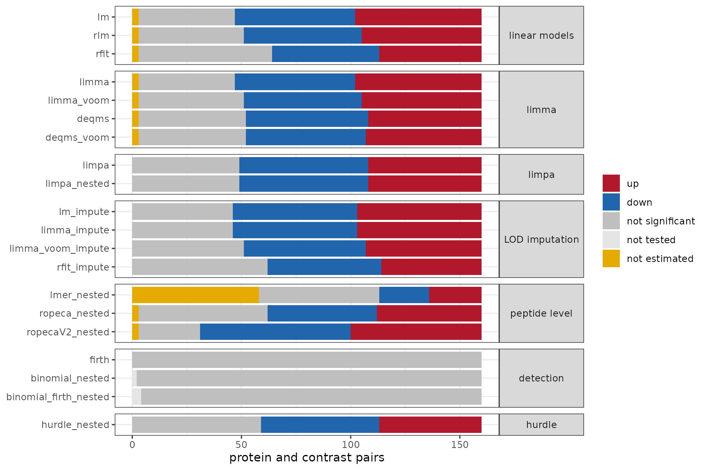
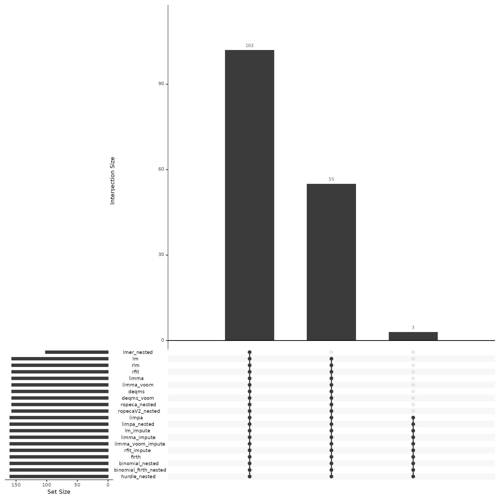
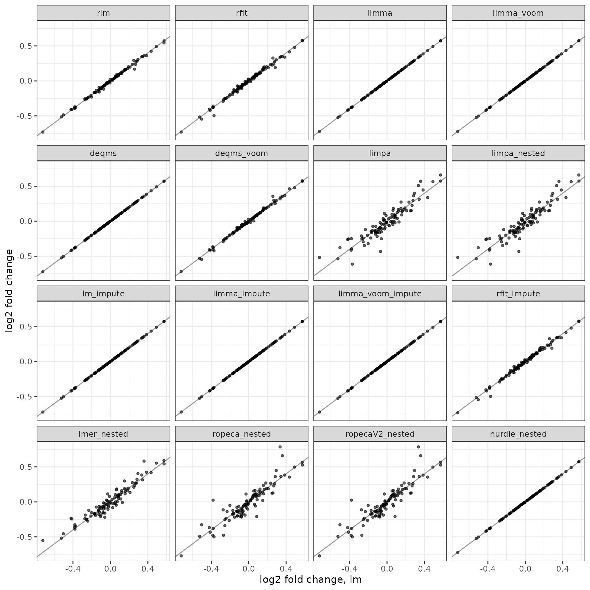
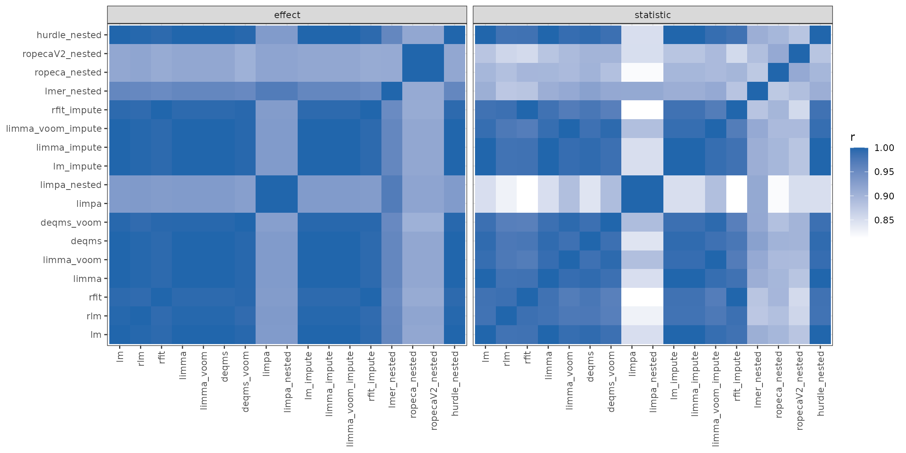
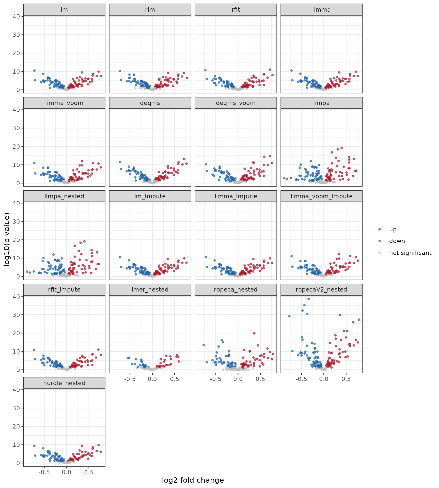

Comparing modelling methods on one dataset
Witold E. Wolski
2026-11-28
Source:vignettes/articles/ComparingMethods.Rmd
ComparingMethods.RmdPurpose
This article fits every modelling method of
build_contrast_analysis() to one simulated experiment and
compares their results with ContrastsComparison:
- which protein and contrast pairs each method estimates
- how closely the methods’ estimates agree on the pairs they share
- which pairs each method calls significant, and where the methods contradict each other
- how the results of another tool are compared, here plain limma
What each method models is described in the vignette All modelling methods at a glance. How the methods perform on data with known changes is measured in prolfquabenchmark.
Simulate one experiment
sim <- sim_lfq_data_peptide_config(n_proteins = 80, seed = 42)
lfq_peptide <- LFQData$new(sim$data, sim$config)
lfq_peptide <- lfq_peptide$get_Transformer()$log2()$lfq
lfq_protein <- lfq_peptide$get_Aggregator()$aggregate()
lfq_limpa <- AggregateLimpa$new(lfq_peptide, "protein")$aggregate()
contrasts <- c(A_vs_Ctrl = "group_A - group_Ctrl", B_vs_Ctrl = "group_B - group_Ctrl")
peptides <- lfq_peptide$data_long()
peptides_per_protein <- dplyr::count(dplyr::distinct(peptides, protein_Id, peptide_Id), protein_Id)The experiment has 80 proteins with 294 peptides in 12 samples of
three groups. 13 % of the peptide intensities are missing, and 29
proteins have a single peptide. The peptides are aggregated to proteins
by median polish (lfq_protein), and for limpa
by limpa’s detection probability model (lfq_limpa), which
also gives each protein intensity a standard error.
Fit every method
list_facades() lists the methods. Each declares the
input it needs: aggregated methods take the proteins,
nested methods take the peptides and report protein
contrasts. Every method models the group; lmer_nested adds
random effects for peptide and sample. The families group the methods as
in the factory figure of the README.
facades <- Filter(function(facade) facade$package == "prolfqua", list_facades())
styles <- utils::read.delim(system.file("extdata", "facade_styles.tsv", package = "prolfqua"))
methods <- intersect(styles$method, names(facades))
family <- stats::setNames(styles$family, styles$method)[methods]
input_for <- function(method) {
if (method == "limpa") {
return(lfq_limpa)
}
if (facades[[method]]$needs == "nested") lfq_peptide else lfq_protein
}
model_for <- function(method) {
if (method == "lmer_nested") "~ group_ + (1 | peptide_Id) + (1 | sampleName)" else "~ group_"
}
analyses <- lapply(stats::setNames(methods, methods), function(method) {
build_contrast_analysis(input_for(method), model_for(method), contrasts, method = method)
})
data.frame(
method = methods,
family = family,
input = vapply(facades[methods], function(facade) facade$needs, character(1))
) |>
knitr::kable(row.names = FALSE, caption = "The methods, their family and the input they take.")| method | family | input |
|---|---|---|
| lm | linear models | aggregated |
| rlm | linear models | aggregated |
| rfit | linear models | aggregated |
| limma | limma | aggregated |
| limma_voom | limma | aggregated |
| deqms | limma | aggregated |
| deqms_voom | limma | aggregated |
| limpa | limpa | aggregated |
| limpa_nested | limpa | nested |
| lm_impute | LOD imputation | aggregated |
| limma_impute | LOD imputation | aggregated |
| limma_voom_impute | LOD imputation | aggregated |
| rfit_impute | LOD imputation | aggregated |
| lmer_nested | peptide level | nested |
| ropeca_nested | peptide level | nested |
| ropecaV2_nested | peptide level | nested |
| firth | detection | aggregated |
| binomial_nested | detection | nested |
| binomial_firth_nested | detection | nested |
| hurdle_nested | hurdle | nested |
Align the results
ContrastsComparison reads the effect, statistic, p-value
and FDR of every method through its ContrastConfiguration
and aligns the methods on protein and contrast. $aligned()
has one row per pair and method, over all pairs that any method reports.
The status of a pair in a method is
not estimated (no row, or no effect),
not tested (an effect without an FDR),
not significant, or up and down
(FDR below the threshold, here 0.1).
comparison <- ContrastsComparison$new(analyses, fdr_threshold = 0.1)
aligned <- comparison$aligned()
aligned$family <- family[aligned$method]
n_pairs <- nrow(dplyr::distinct(aligned, protein_Id, contrast))
head(aligned, 3)## # A tibble: 3 × 10
## protein_Id contrast method effect statistic p.value FDR estimate_type
## <chr> <chr> <chr> <dbl> <dbl> <dbl> <dbl> <chr>
## 1 0CubNR~0890 A_vs_Ctrl lm 0.674 12.7 3.53e-8 5.54e-7 observed
## 2 0CubNR~0890 A_vs_Ctrl rlm 0.666 12.4 5.85e-8 9.12e-7 observed
## 3 0CubNR~0890 A_vs_Ctrl rfit 0.661 10.7 2.40e-7 2.84e-6 observed
## # ℹ 2 more variables: status <chr>, family <chr>
status_colours <- c(
up = "#b2182b",
down = "#2166ac",
`not significant` = "grey75",
`not tested` = "grey90",
`not estimated` = "#e6ab02"
)
aligned |>
dplyr::mutate(
method = factor(method, levels = rev(methods)),
family = factor(family, levels = unique(styles$family)),
status = factor(status, levels = names(status_colours))
) |>
ggplot(aes(y = method, fill = status)) +
geom_bar() +
facet_grid(family ~ ., scales = "free_y", space = "free_y") +
scale_fill_manual(values = status_colours) +
labs(x = "protein and contrast pairs", y = NULL, fill = NULL) +
theme_bw() +
theme(strip.text.y = element_text(angle = 0))
Status of the 160 protein and contrast pairs in each method, both contrasts, FDR threshold 0.1. Methods grouped by family. not estimated: the method reports no effect for the pair; not tested: an effect without a p-value.
Which pairs each method estimates
$coverage() counts the pairs per set of methods that
estimate them. The table names the methods missing from each set.
comparison$coverage() |>
dplyr::mutate(not_estimated_by = vapply(
strsplit(estimated_by, " & ", fixed = TRUE),
function(by) toString(setdiff(methods, by)),
character(1)
)) |>
dplyr::mutate(not_estimated_by = dplyr::if_else(not_estimated_by == "", "(none)", not_estimated_by)) |>
dplyr::select(not_estimated_by, pairs) |>
knitr::kable(caption = "Protein and contrast pairs, by the methods that do not estimate them.")| not_estimated_by | pairs |
|---|---|
| (none) | 102 |
| lmer_nested | 55 |
| lm, rlm, rfit, limma, limma_voom, deqms, deqms_voom, lmer_nested, ropeca_nested, ropecaV2_nested | 3 |
comparison$upset()
UpSet plot of the protein and contrast pairs each method estimates. Bars on top: pairs estimated by exactly the methods marked below them.
lmer_nested does not estimate the 29 proteins with a
single peptide: its random peptide effect needs at least two peptides.
$provenance() records them:
analyses$lmer_nested$provenance()## # A tibble: 5 × 8
## source step event n ids reason failure response
## <chr> <chr> <chr> <int> <lis> <chr> <lgl> <chr>
## 1 model fit (Model) fits failed 29 <chr> Error… TRUE NA
## 2 model fit (Model) singular fits 49 <chr> coeff… FALSE NA
## 3 model fit (Model) missing responses d… 391 <chr> NA re… FALSE NA
## 4 contrasts get_missing subjects absent fro… 29 <chr> fit f… FALSE NA
## 5 contrasts get_missing subjects absent fro… 29 <chr> fit f… FALSE NA
gap <- aligned |>
dplyr::filter(method == "lm", status == "not estimated") |>
dplyr::select(protein_Id, contrast)lm and the other methods that model only the observed
intensities do not estimate 3 pairs, because their proteins have no
observation in a group:
lfq_protein$data_long() |>
dplyr::filter(protein_Id %in% gap$protein_Id) |>
dplyr::select(protein_Id, sampleName, intensity = dplyr::all_of(lfq_protein$response())) |>
tidyr::pivot_wider(names_from = sampleName, values_from = intensity) |>
knitr::kable(digits = 2, caption = "Per-sample protein intensities (log2, median polish) of the proteins that lm cannot estimate.")| protein_Id | A_V1 | A_V2 | A_V3 | A_V4 | B_V1 | B_V2 | B_V3 | B_V4 | Ctrl_V1 | Ctrl_V2 | Ctrl_V3 | Ctrl_V4 |
|---|---|---|---|---|---|---|---|---|---|---|---|---|
| 8mS8sK~0150 | NA | NA | NA | NA | 3.85 | NA | NA | 3.76 | NA | NA | 3.37 | 3.55 |
| DTCi0N~0734 | NA | NA | NA | NA | NA | 4.37 | 4.35 | 4.28 | NA | 4.06 | 4.07 | 4.21 |
| OrL0ux~1369 | NA | NA | NA | 3.78 | NA | NA | NA | NA | 4.12 | 4.05 | NA | 3.98 |
The _impute methods estimate these pairs with the
missing group at the limit of detection, limpa and
limpa_nested with their detection probability model, and
the detection models from the detection pattern; their estimates are
listed with the conflicts below.
The pairs of one method
$pairs() returns the pairs of one method that have all
the given columns. The detection model
binomial_firth_nested estimates an effect for every pair
but a p-value only for some: a protein whose peptides are detected in
every sample has no difference in detection to test.
c(
effect = nrow(comparison$pairs("binomial_firth_nested", columns = "effect")),
effect_and_p_value = nrow(comparison$pairs("binomial_firth_nested", columns = c("effect", "p.value")))
)## effect effect_and_p_value
## 160 156The pairs that several methods share are the intersection of their
$pairs(). The detection models estimate log odds of
detection; the other methods estimate log2 fold changes of intensity.
Their estimates are compared on the pairs that all intensity methods
estimate:
intensity <- methods[family != "detection"]
shared <- Reduce(dplyr::intersect, lapply(intensity, function(method) comparison$pairs(method)))
estimates <- aligned |>
dplyr::filter(method %in% intensity) |>
dplyr::semi_join(shared, by = c("protein_Id", "contrast"))
nrow(shared)## [1] 102Estimates on the same pairs
reference <- estimates |>
dplyr::filter(method == "lm") |>
dplyr::select(protein_Id, contrast, effect_lm = effect)
estimates |>
dplyr::filter(method != "lm") |>
dplyr::inner_join(reference, by = c("protein_Id", "contrast")) |>
dplyr::mutate(method = factor(method, levels = intensity)) |>
ggplot(aes(x = effect_lm, y = effect)) +
geom_abline(colour = "grey60") +
geom_point(size = 1, alpha = 0.6) +
facet_wrap(~method, ncol = 4) +
labs(x = "log2 fold change, lm", y = "log2 fold change") +
theme_bw()
Log2 fold change of each intensity method against lm, on the 102 protein and contrast pairs that all intensity methods estimate. Grey line: equal estimates.
correlation <- function(column) {
wide <- estimates |>
dplyr::select(protein_Id, contrast, method, value = dplyr::all_of(column)) |>
tidyr::pivot_wider(names_from = method, values_from = value)
r <- stats::cor(wide[intensity])
data.frame(
measure = column,
method_1 = factor(rownames(r)[row(r)], levels = intensity),
method_2 = factor(colnames(r)[col(r)], levels = intensity),
r = as.vector(r)
)
}
correlations <- dplyr::bind_rows(correlation("effect"), correlation("statistic"))
lowest <- correlations |>
dplyr::filter(as.integer(method_1) < as.integer(method_2)) |>
dplyr::slice_min(r, n = 1, by = measure, with_ties = FALSE)The effects agree more closely than the statistics, which also depend on each method’s standard error and degrees of freedom. The lowest correlation of the effects is 0.90 (deqms_voom and ropeca_nested), that of the statistics 0.81 (rfit and limpa).
ggplot(correlations, aes(x = method_1, y = method_2, fill = r)) +
geom_tile() +
facet_wrap(~measure) +
scale_fill_gradient(low = "white", high = "#2166ac") +
labs(x = NULL, y = NULL) +
theme_bw() +
theme(axis.text.x = element_text(angle = 90, hjust = 1, vjust = 0.5))
Pearson correlation between the intensity methods of the log2 fold changes (effect) and of the statistics, on the 102 protein and contrast pairs that all of them estimate.
Significant calls
calls <- aligned |>
dplyr::filter(method %in% intensity) |>
dplyr::summarise(significant = sum(status %in% c("up", "down")), .by = method)
fewest <- dplyr::slice_min(calls, significant, n = 1, with_ties = FALSE)
most <- dplyr::slice_max(calls, significant, n = 1, with_ties = FALSE)At FDR 0.1 the intensity methods call between 47 (lmer_nested) and 129 (ropecaV2_nested) of the 160 pairs significant; the detection models call 0.
aligned |>
dplyr::filter(method %in% intensity, !is.na(p.value)) |>
dplyr::mutate(
method = factor(method, levels = intensity),
status = factor(status, levels = names(status_colours))
) |>
ggplot(aes(x = effect, y = -log10(p.value), colour = status)) +
geom_point(size = 1, alpha = 0.7) +
facet_wrap(~method, ncol = 4) +
scale_colour_manual(values = status_colours) +
labs(x = "log2 fold change", y = "-log10(p-value)", colour = NULL) +
theme_bw()
Volcano plots of the intensity methods, both contrasts, coloured by the status at FDR 0.1. Pairs without a p-value are not shown.
Where the methods contradict each other
$conflicts() counts, per pair, the methods in each
status and flags three contradictions: sign_conflict (up in
one method, down in another), significance_conflict
(significant in one, tested but not significant in another) and
coverage_conflict (significant in one, not estimated by
another). The detection models call no pair significant here, so with
them nearly every pair significant in an intensity method would be a
significance conflict (137 of 160 pairs). The conflicts are therefore
counted among the intensity methods only.
intensity_comparison <- ContrastsComparison$new(analyses[intensity], fdr_threshold = 0.1)
conflicts <- intensity_comparison$conflicts()
intensity_aligned <- intensity_comparison$aligned()
conflicts |>
dplyr::summarise(dplyr::across(dplyr::ends_with("_conflict"), sum), pairs = dplyr::n()) |>
knitr::kable(caption = "Protein and contrast pairs with each kind of conflict among the intensity methods.")| sign_conflict | significance_conflict | coverage_conflict | pairs |
|---|---|---|---|
| 3 | 72 | 47 | 160 |
Opposite signs
sign_rows <- intensity_aligned |>
dplyr::semi_join(dplyr::filter(conflicts, sign_conflict), by = c("protein_Id", "contrast")) |>
dplyr::filter(status %in% c("up", "down")) |>
dplyr::select(protein_Id, contrast, method, effect, FDR, status)
knitr::kable(sign_rows, digits = 3, caption = "Significant calls of the pairs that are up in one method and down in another.")| protein_Id | contrast | method | effect | FDR | status |
|---|---|---|---|---|---|
| 2yQxtd~5083 | A_vs_Ctrl | rlm | 0.095 | 0.089 | up |
| 2yQxtd~5083 | A_vs_Ctrl | ropecaV2_nested | -0.059 | 0.040 | down |
| l6ixC6~8472 | A_vs_Ctrl | limpa | 0.081 | 0.000 | up |
| l6ixC6~8472 | A_vs_Ctrl | limpa_nested | 0.081 | 0.000 | up |
| l6ixC6~8472 | A_vs_Ctrl | ropecaV2_nested | -0.039 | 0.082 | down |
| R5v1PE~0538 | A_vs_Ctrl | ropeca_nested | -0.210 | 0.000 | down |
| R5v1PE~0538 | A_vs_Ctrl | ropecaV2_nested | -0.210 | 0.000 | down |
| R5v1PE~0538 | A_vs_Ctrl | hurdle_nested | 0.086 | 0.096 | up |
All of these calls have an absolute log2 fold change of at most 0.21.
Significant in one method, not in another
intensity_aligned |>
dplyr::semi_join(dplyr::filter(conflicts, significance_conflict), by = c("protein_Id", "contrast")) |>
dplyr::count(method, status) |>
tidyr::pivot_wider(names_from = status, values_from = n, values_fill = 0) |>
dplyr::arrange(match(method, intensity)) |>
knitr::kable(caption = paste0(
"Status in each method of the ", sum(conflicts$significance_conflict),
" pairs that are significant in some intensity methods and tested but not significant in others."
))| method | down | not significant | up | not estimated |
|---|---|---|---|---|
| lm | 24 | 22 | 26 | 0 |
| rlm | 23 | 26 | 23 | 0 |
| rfit | 18 | 39 | 15 | 0 |
| limma | 24 | 22 | 26 | 0 |
| limma_voom | 23 | 26 | 23 | 0 |
| deqms | 25 | 27 | 20 | 0 |
| deqms_voom | 24 | 27 | 21 | 0 |
| limpa | 26 | 26 | 20 | 0 |
| limpa_nested | 26 | 26 | 20 | 0 |
| lm_impute | 24 | 23 | 25 | 0 |
| limma_impute | 24 | 23 | 25 | 0 |
| limma_voom_impute | 23 | 28 | 21 | 0 |
| rfit_impute | 19 | 39 | 14 | 0 |
| lmer_nested | 7 | 43 | 8 | 14 |
| ropeca_nested | 19 | 37 | 16 | 0 |
| ropecaV2_nested | 38 | 6 | 28 | 0 |
| hurdle_nested | 21 | 36 | 15 | 0 |
Significant in one method, not estimated by another
intensity_aligned |>
dplyr::semi_join(dplyr::filter(conflicts, coverage_conflict), by = c("protein_Id", "contrast")) |>
dplyr::filter(status == "not estimated") |>
dplyr::count(method, name = "pairs") |>
knitr::kable(caption = "Pairs significant in some intensity method that a method does not estimate.")| method | pairs |
|---|---|
| deqms | 2 |
| deqms_voom | 2 |
| limma | 2 |
| limma_voom | 2 |
| lm | 2 |
| lmer_nested | 47 |
| rfit | 2 |
| rlm | 2 |
| ropecaV2_nested | 2 |
| ropeca_nested | 2 |
Most of them are the single-peptide proteins lmer_nested
cannot fit; the others are the proteins without observations in a group.
The methods that estimate those report:
intensity_aligned |>
dplyr::semi_join(gap, by = c("protein_Id", "contrast")) |>
dplyr::filter(status != "not estimated") |>
dplyr::select(protein_Id, contrast, method, estimate_type, effect, p.value, FDR, status) |>
knitr::kable(digits = 3, caption = "Estimates of the pairs lm cannot estimate. estimate_type lod_imputed: the missing group set to the limit of detection.")| protein_Id | contrast | method | estimate_type | effect | p.value | FDR | status |
|---|---|---|---|---|---|---|---|
| 8mS8sK~0150 | A_vs_Ctrl | limpa | observed | -0.298 | 0.306 | 0.415 | not significant |
| 8mS8sK~0150 | A_vs_Ctrl | limpa_nested | observed | -0.298 | 0.306 | 0.415 | not significant |
| 8mS8sK~0150 | A_vs_Ctrl | lm_impute | lod_imputed | 0.000 | 1.000 | 1.000 | not significant |
| 8mS8sK~0150 | A_vs_Ctrl | limma_impute | lod_imputed | 0.000 | 1.000 | 1.000 | not significant |
| 8mS8sK~0150 | A_vs_Ctrl | limma_voom_impute | lod_imputed | 0.000 | 1.000 | 1.000 | not significant |
| 8mS8sK~0150 | A_vs_Ctrl | rfit_impute | lod_imputed | 0.000 | 1.000 | 1.000 | not significant |
| 8mS8sK~0150 | A_vs_Ctrl | hurdle_nested | lod_imputed | 0.000 | 0.532 | 0.648 | not significant |
| DTCi0N~0734 | A_vs_Ctrl | limpa | observed | -0.826 | 0.008 | 0.016 | down |
| DTCi0N~0734 | A_vs_Ctrl | limpa_nested | observed | -0.826 | 0.008 | 0.016 | down |
| DTCi0N~0734 | A_vs_Ctrl | lm_impute | lod_imputed | -0.253 | 0.006 | 0.015 | down |
| DTCi0N~0734 | A_vs_Ctrl | limma_impute | lod_imputed | -0.253 | 0.006 | 0.016 | down |
| DTCi0N~0734 | A_vs_Ctrl | limma_voom_impute | lod_imputed | -0.253 | 0.005 | 0.014 | down |
| DTCi0N~0734 | A_vs_Ctrl | rfit_impute | lod_imputed | -0.287 | 0.001 | 0.002 | down |
| DTCi0N~0734 | A_vs_Ctrl | hurdle_nested | lod_imputed | -0.253 | 0.004 | 0.013 | down |
| OrL0ux~1369 | B_vs_Ctrl | limpa | observed | -0.885 | 0.002 | 0.004 | down |
| OrL0ux~1369 | B_vs_Ctrl | limpa_nested | observed | -0.885 | 0.002 | 0.004 | down |
| OrL0ux~1369 | B_vs_Ctrl | lm_impute | lod_imputed | -0.207 | 0.023 | 0.035 | down |
| OrL0ux~1369 | B_vs_Ctrl | limma_impute | lod_imputed | -0.207 | 0.024 | 0.035 | down |
| OrL0ux~1369 | B_vs_Ctrl | limma_voom_impute | lod_imputed | -0.207 | 0.012 | 0.020 | down |
| OrL0ux~1369 | B_vs_Ctrl | rfit_impute | lod_imputed | -0.207 | 0.008 | 0.014 | down |
| OrL0ux~1369 | B_vs_Ctrl | hurdle_nested | lod_imputed | -0.207 | 0.015 | 0.027 | down |
Results of another tool
ContrastsComparison also takes a
ContrastsTable holding another tool’s results. Its
ContrastConfiguration names the result columns, so they
need not be renamed; only the protein column must match. Here plain
limma, as its User’s Guide recommends for group comparisons
(~ 0 + group, makeContrasts(),
contrasts.fit(), eBayes()), on the protein
intensities:
wide <- lfq_protein$data_wide(as.matrix = TRUE)
design <- stats::model.matrix(~ 0 + group_, wide$annotation)
contrast_matrix <- limma::makeContrasts(
A_vs_Ctrl = group_A - group_Ctrl,
B_vs_Ctrl = group_B - group_Ctrl,
levels = design
)
fit <- limma::eBayes(limma::contrasts.fit(limma::lmFit(wide$data, design), contrast_matrix))## Warning: Partial NA coefficients for 3 probe(s)
plain_limma <- dplyr::bind_rows(lapply(colnames(contrast_matrix), function(name) {
top <- limma::topTable(fit, coef = name, number = Inf, sort.by = "none")
data.frame(protein_Id = rownames(top), comparison = name, top, row.names = NULL)
}))
head(plain_limma, 3)## protein_Id comparison logFC AveExpr t P.Value
## 1 0CubNR~0890 A_vs_Ctrl 0.6741462 4.549489 14.996107 4.238838e-09
## 2 2FL9I1~1644 A_vs_Ctrl -0.4134068 4.249730 -8.987994 6.406394e-07
## 3 2kfAGV~9316 A_vs_Ctrl -0.1951945 3.843225 -2.226882 5.689825e-02
## adj.P.Val B
## 1 6.612587e-08 11.245701
## 2 6.246234e-06 5.761190
## 3 9.862364e-02 -5.272555
limma_columns <- ContrastConfiguration$new(
subject_id = "protein_Id",
contrast_col = "comparison",
effect_col = "logFC",
score_col = "t",
pvalue_col = "P.Value",
fdr_col = "adj.P.Val",
avg_abundance_col = "AveExpr"
)
limma_comparison <- ContrastsComparison$new(
list(
plain_limma = ContrastsTable$new(plain_limma, model_name = "plain limma", config = limma_columns),
limma_unweighted = build_contrast_analysis(lfq_protein, "~ group_", contrasts, method = "limma", weights = NULL),
limma = analyses$limma
),
fdr_threshold = 0.1
)
knitr::kable(limma_comparison$coverage())| estimated_by | pairs |
|---|---|
| plain_limma & limma_unweighted & limma | 157 |
| none | 3 |
limma_wide <- limma_comparison$aligned() |>
dplyr::select(protein_Id, contrast, method, effect, p.value) |>
tidyr::pivot_wider(names_from = method, values_from = c(effect, p.value))
limma_conflicts <- limma_comparison$conflicts()Without weights, prolfqua’s limma reproduces plain
limma: the largest difference is 4e-15 in the effect and 5e-14 in the
p-value, and neither estimates the 3 pairs of proteins without
observations in a group (plain limma warns about them and returns NA).
By default prolfqua weights each protein intensity by the number of
peptides behind it (nr_children); this shifts the estimates
by up to 0.1, and 13 pairs are significant with one of the two and not
with the other.
Notes on single methods
ropecaV2_nested estimates the correlation of the
peptides of a protein from the residuals, here 0.03, so that proteins
with many peptides are not reported as more significant.
hurdle_nested joins an intensity model
(lm_impute) and a detection model
(binomial_firth_nested) by protein and contrast and
combines their p-values with Fisher’s method, as msqrob2’s hurdle model
does. diff comes from the intensity model; a protein
estimated by one component only keeps that component’s p-value.
ContrastsHurdleFacade builds the same from two fitted
analyses:
hurdle <- ContrastsHurdleFacade$new(analyses$lm_impute, analyses$binomial_firth_nested)
hurdle$get_contrasts() |>
dplyr::count(contrast, hurdle_components, name = "pairs")## # A tibble: 4 × 3
## contrast hurdle_components pairs
## <chr> <chr> <int>
## 1 A_vs_Ctrl both 66
## 2 A_vs_Ctrl intensity 14
## 3 B_vs_Ctrl both 66
## 4 B_vs_Ctrl intensity 14Session Info
## R version 4.6.2 (2026-10-29)
## Platform: x86_64-pc-linux-gnu
## Running under: Ubuntu 26.04.1 LTS
##
## Matrix products: default
## BLAS: /usr/lib/x86_64-linux-gnu/openblas-pthread/libblas.so.3
## LAPACK: /usr/lib/x86_64-linux-gnu/openblas-pthread/libopenblasp-r0.3.32.so; LAPACK version 3.12.0
##
## locale:
## [1] LC_CTYPE=C.UTF-8 LC_NUMERIC=C LC_TIME=C.UTF-8
## [4] LC_COLLATE=C.UTF-8 LC_MONETARY=C.UTF-8 LC_MESSAGES=C.UTF-8
## [7] LC_PAPER=C.UTF-8 LC_NAME=C LC_ADDRESS=C
## [10] LC_TELEPHONE=C LC_MEASUREMENT=C.UTF-8 LC_IDENTIFICATION=C
##
## time zone: UTC
## tzcode source: system (glibc)
##
## attached base packages:
## [1] stats graphics grDevices utils datasets methods base
##
## other attached packages:
## [1] ggplot2_4.0.4 dplyr_1.2.1 prolfqua_1.9.10
##
## loaded via a namespace (and not attached):
## [1] tidyselect_1.2.1 farver_2.1.2 S7_1.0.0
## [4] fastmap_1.2.0 rpart_4.1.27 digest_0.6.39
## [7] lifecycle_1.0.5 survival_3.8-12 Rfit_0.27.0
## [10] statmod_1.5.2 magrittr_2.0.5 compiler_4.6.2
## [13] rlang_1.3.0 sass_0.5.0 progress_1.2.3
## [16] tools_4.6.2 utf8_1.2.6 yaml_2.3.12
## [19] data.table_1.18.6.1 limpa_1.4.2 knitr_1.52
## [22] labeling_0.4.3 prettyunits_1.2.0 htmlwidgets_1.6.4
## [25] plyr_1.8.9 RColorBrewer_1.1-3 withr_3.0.3
## [28] purrr_1.2.2 numDeriv_2016.8-1.1 desc_1.4.3
## [31] nnet_7.3-21 grid_4.6.2 jomo_2.7-6
## [34] mice_3.19.0 scales_1.4.0 iterators_1.0.14
## [37] MASS_7.3-66 cli_3.6.6 UpSetR_1.4.1
## [40] rmarkdown_2.32 crayon_1.5.3 ragg_1.5.2
## [43] reformulas_0.4.4 generics_0.1.4 otel_0.3.0
## [46] minqa_1.2.8 cachem_1.1.0 stringr_1.6.0
## [49] splines_4.6.2 operator.tools_1.6.3.1 vctrs_0.7.3
## [52] boot_1.3-32 glmnet_5.2 Matrix_1.7-6
## [55] jsonlite_2.0.0 hms_1.1.4 mitml_0.4-5
## [58] ggrepel_0.9.8 systemfonts_1.3.4 foreach_1.5.2
## [61] limma_3.68.5 tidyr_1.3.2 jquerylib_0.1.4
## [64] glue_1.8.1 nloptr_2.2.1 pkgdown_2.2.1
## [67] pan_2.0 codetools_0.2-20 stringi_1.8.9
## [70] gtable_0.3.6 shape_1.4.6.1 lme4_2.1-0
## [73] lmerTest_3.2-1 tibble_3.3.1 pillar_1.11.1
## [76] htmltools_0.5.9 R6_2.6.1 textshaping_1.1.0
## [79] Rdpack_2.6.6 formula.tools_1.7.1 evaluate_1.0.5
## [82] lattice_0.23-1 rbibutils_2.4.1 backports_1.5.1
## [85] broom_1.0.13 bslib_0.12.0 Rcpp_1.1.2
## [88] gridExtra_2.3.1 nlme_3.1-171 mgcv_1.9-4
## [91] logistf_1.26.1 xfun_0.62 fs_2.1.0
## [94] pkgconfig_2.0.3